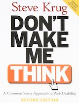
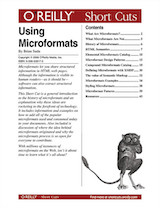

57 Books That Informed The Way I Approach Software Development
Published on by David VanDusen.
I talked about how valuable books are for learning software development in my previous article, Learn Software Development By Reading Books. This gave me the idea that it might be a fun challenge to recall some key and foundational books I’ve read, and roughly the order I read them.
There have been plenty of tech books I read over the years that I wouldn’t consider formative, so I won’t mention them. On the flip side, there have been some books that were influential to the way I approach software development that aren’t tech books, so they’re in the list.
Ok, buckle up for a ride down memory lane!
Table of contents
- ZZT-OOP Programming Language 1991, Tim Sweeny
- Microsoft® MS-DOS® Operating System version 5.0 User’s Guide and Reference 1991, Microsoft
- TI-83 Guidebook 1996, Texas Instruments
- HTML 4 for the World Wide Web Visual Quickstart Guide (Fourth Edition) 1999, Elizabeth Castro
- SAMS Teach Yourself Visual Basic 6 in 24 Hours 1999, Greg Perry with Sanjaya Hettihewa
- Java 2: The Complete Reference (Third Edition) 1999, Patrick Naughton and Herbert Schildt
- Pure JavaScript: A Code-Intensive Premium Reference 1999, R. Allen Wyke, Jason D. Gilliam, and Charlton Ting
- Beginning Perl 2000, Simon Cozens with Peter Wainwright
- Web Database Applications with PHP & MySQL: Building Effective Database-Driven Web Sites 2002, Hugh E. Williams and David Lane
- Designing with Web Standards 2003, Jeffrey Zeldman
- The Zen of CSS Design: Visual Enlightenment for the Web 2005, Dave Shea and Molly E. Holzschlag
- Bulletproof Web Design 2005, Dan Cederholm
- Don’t Make Me Think: A Common Sense Approach to Web Usability (Second Edition) 2005, Steve Krug
- Using Microformats 2006, Brian Suda
- Web Accessibility: Web Standards and Regulatory Compliance 2006, Richard Rutter, Patrick H. Lauke, Cynthia Waddell, Jim Thatcher, Shawn Lawton Henry, Bruce Lawson, Andrew Kirkpatrick, Christian Heilmann, Michael R. Burks, Bob Regan, and Mark Urban
- Bulletproof Ajax 2007, Jeremy Keith
- The Art & Science of CSS 2007, Cameron Adams, Jina Bolton, David Johnson, Steve Smith, and Jonathan Snook
- RESTful Web Services: Web Services for the Real World 2007, Leonard Richardson and Sam Ruby
- JavaScript: The Good Parts 2008, Douglas Crockford
- High Performance Web Sites: Essential Knowledge for Frontend Engineers 2007, Steve Souders
- Even Faster Web Sites: Performance Best Practices for Web Developers 2009, Steve Souders
- Getting Things Done: The Art of Stress-Free Productivity 2002, David Allen
- Getting Real: The smarter, faster, easier way to build a successful web application 2006, 37Signals
- XML: Visual QuickStart Guide (Second Edition) 2008, Kevin Howard Goldberg
- Typography for Lawyers: Essential Tools for Polished & Persuasive Documents 2010, Matthew Butterick
- Beginning ASP.NET 4 in C# 2010 2010, Matthew MacDonald
- Pro ASP.NET 4 in C# 2010 (Fourth Edition) 2010, Matthew MacDonald, Adam Freeman, and Mario Szpuszta
- Pro Git 2009, Schott Chacon
- Apache Maven 3 Cookbook 2011, Srirangan
- Effective Java (Second Edition) 2008, Joshua Bloch
- Design Patterns: Elements of Reusable Object-Oriented Software 1994, Erich Gamma, Richard Helm, Ralph Johnson, and John Vlissides
- Refactoring: Improving the Design of Existing Code 1999, Martin Fowler with Kent Beck, John Brant, William Opdyke, and Don Roberts
- Clean Code: A Handbook of Agile Software Craftsmanship 2008, Robert C. Martin
- Butterick’s Practical Typography 2013, Matthew Butterick
- Developing Backbone.js Applications: Building Better JavaScript Applications 2013, Addy Osmani
- Functional JavaScript: Introducing Functional Programming with Underscore.js 2013, Michael Fogus
- Effective JavaScript: 68 Specific Ways to Harness the Power of JavaScript 2012, David Herman
- Beautiful Evidence 2006, Edward Tufte
- The 22 Immutable Laws of Branding 1998, Al Ries and Laura Ries
- Inside the Tornado: Strategies for Developing, Leveraging, and Surviving Hypergrowth Markets 2005, Geoffrey A. Moore
- Crossing the Chasm, 3rd Edition: Marketing and Selling Disruptive Products to Mainstream Customers 2014, Geoffrey A. Moore
- Data Science from Scratch: First Principles with Python 2015, Joel Grus
- Cracking the Coding Interview: 189 Programming Questions and Solutions (6th Edition) 2015, Gayle Laakmann McDowell
- Apprenticeship Patterns: Guidance for the Aspiring Software Craftsman 2009, David H. Hoover and Adewale Oshineye
- 97 Things Every Programmer Should Know: Collective Wisdom from the Experts 2010, Kevlin Henney
- Securing the Perimeter: Deploying Identity and Access Management with Free Open Source Software 2018, Michael Schwartz and Maciuj Machulak
- Docker Deep Dive 2017, Nigel Poulton
- The Kubernetes Book 2017, Nigel Poulton
- Deep Work: Rules for Focused Success in a Distracted World 2016, Cal Newport
- HTTP/2 in Action 2019, Barry Pollard
- Shape Up: Stop Running in Circles and Ship Work that Matters 2019, Ryan Singer
- TCP/IP Illustrated, Volume 1: The Protocols (Second Edition) 2011, Kevin R. Fall and W. Richard Stevens
- Security Engineering: A Guide to Building Dependable Distributed Systems (Third Edition) 2020, Ross Anderson
- ZZT 2014, Anna Anthropy
- The Psychology of Computer Programming: Silver Anniversary Edition 1971, 1998, Gerald M. Weinberg
- Becoming a Technical Leader: An Organic Problem-Solving Approach 1986, Gerald M. Weinberg
- Unicode Explained: Internationalize Documents, Programs, and Web Sites 2006, Jukka K. Korpela
ZZT-OOP Programming Language
1991, Tim Sweeny
The first entry is an exception to the rule since it’s an in-program help document and not a book. Stick with me, though!
I played around with my dad’s 286 a fair amount in the early 90’s, and when he got a new Pentium machine with Windows in 1995, I inherited the old clunker and began my programming journey.
A game I was already familiar with in 1995, ZZT, came with a level editor with its own programming language: ZZT-OOP. With exclusive access to the computer and the kind of free time that only kids have, I took it on myself to master this language.
The help document is organized much like a programming book—and you can print it! This was my first foray into reading about software development.
Microsoft® MS-DOS® Operating System version 5.0 User’s Guide and Reference
1991, Microsoft
My dad insisted on keeping this book in proximity to the 286 when he gave me the computer. So, it was around, and I was feeling empowered by having learned how to use a programming language, so I found myself reading this tome. It definitely helped me generalize what I had learned about computing.
 TI-83 Guidebook
TI-83 Guidebook
1996, Texas Instruments
I usually had spare time during math class in secondary school because I completed assignments quickly. When we were assigned graphing calculators, I used some of this time to read through the user guide, which included a chapter on how to create custom programs.
Of course, the custom programs I created were games. I recall making a suite of games of chance and transferring them to the other calculators by connecting them with wires.
HTML 4 for the World Wide Web Visual Quickstart Guide (Fourth Edition)
1999, Elizabeth Castro
My girlfriend in 1999 was taking info-tech class at the same time as I had phys-ed. Being a nerd, I skipped class to hang out with her in the computer lab. Although I never took info-tech, this book was an assigned reading in that class, and I grabbed a copy anyway.
A memorable thing about this book was that it introduced me to Cascading Stylesheets. My early, positive exposure to CSS would become an important guidepost in my subsequent technical development. But, man, was CSS different back in the Internet Explorer 4 days. It’s telling that this is the fourth edition of a book whose first edition came out only three years earlier.
SAMS Teach Yourself Visual Basic 6 in 24 Hours
1999, Greg Perry with Sanjaya Hettihewa
I recall using the IDE included on this book’s companion CD-ROM to build a tile-based RPG with my own sprite art and sound design. I was focused on being an artist and musician at this point; programming was just a part-time job.
Java 2: The Complete Reference (Third Edition)
1999, Patrick Naughton and Herbert Schildt
I realized I was more interested in web development than desktop apps. I wanted to add interactivity to my websites, and the obvious way to do that was with Java Applets. Frustratingly, the limitations of how applets could interact with the content of the web pages left me wanting something more integrated.
Pure JavaScript: A Code-Intensive Premium Reference
1999, R. Allen Wyke, Jason D. Gilliam, and Charlton Ting
What I really wanted was JavaScript. My first book on JavaScript was almost as thick as it was wide, thanks in large part to the amount of content about server-side JavaScript! That’s right, server-side JavaScript ten years before Node.js. There was a big chunk about Netscape’s APIs, and another about Microsoft’s. I never did play with any of that server-side stuff, but I reread the core JavaScript syntax until I knew it by heart.
Beginning Perl
2000, Simon Cozens with Peter Wainwright
I picked up Perl to fulfil the need to do server-side form processing and persistence. With this book’s Introduction to CGI, I got just that. This is when I started to dig into Apache httpd, and get to know web servers more deeply.
This was also my first deep dive into regular expressions. There’s something about the way regex are presented in this book that resulted in my ability to gain fluency that has lasted me my whole career. Beginning Perl is available online for free, so take a look at the Regular Expressions chapter yourself, if you’re interested. I’d bet it still holds up!
Web Database Applications with PHP & MySQL: Building Effective Database-Driven Web Sites
2002, Hugh E. Williams and David Lane
Although the Perl book got me working with databases, this book is what solidified the fundamentals. This was around the time that the Web 2.0 trend was emerging. Websites were expected to have interactive forms, now. Coupled with the relative ease of shipping an app to a shared LAMP server, this marked a major shift in the kinds of projects I was doing.
Designing with Web Standards
2003, Jeffrey Zeldman
As an artist, I always thought about what I was building from the perspective of craft, and creating polished works. This book got me fired up the level of craftsmanship I could achieve.
The Zen of CSS Design: Visual Enlightenment for the Web
2005, Dave Shea and Molly E. Holzschlag
This book was based on Dave’s popular website, CSS Zen Garden, which many folks who were doing web development back in the early 2000’s think fondly on. I was even lucky enough to work with Dave for a while at Bench Accounting, and I can confirm that he has a very structured way of thinking about design, which I appreciate immensely.
At the time I read this book, even though CSS had decent support in IE, Firefox, and Opera (I don’t know about Safari—not many Mac users to worry about back then,) most popular websites were still sliced images in HTML tables. The whole CSS Zen Garden thing was a big step forward for getting the industry to adopt the technology.
Bulletproof Web Design
2005, Dan Cederholm
I had been following Dan’s blog for some years when he announced this book. I was already engaged with his approach to web design, so it was great to see his thoughts published in this format.
I had the pleasure of chatting with Dan at Web Directions North 2007, by which time I had already started implementing some of his ideas in my projects, to great success.
 Don’t Make Me Think: A Common Sense Approach to Web Usability (Second Edition)
2005, Steve Krug
Many authors in my RSS feed had mentioned this book at some point. It took me a while, and a second edition release, before I gave it a go. It seems like it’d be a risk to publish a book where the content is just a bunch of common sense, but lemme tell ya, it helps to have it printed on paper when you need to convince someone that something is common sense.
 Using Microformats
2006, Brian Suda
I was pumped about Microformats as it was emerging. Something felt so right about having a broader alignment across the web about how common kinds of content would be described. When a downloadable PDF “book” about it became available, I had to show my support. That said, anything you’d ever want to know about Microformats is on the Microformats wiki.
Web Accessibility: Web Standards and Regulatory Compliance
2006, Richard Rutter, Patrick H. Lauke, Cynthia Waddell, Jim Thatcher, Shawn Lawton Henry, Bruce Lawson, Andrew Kirkpatrick, Christian Heilmann, Michael R. Burks, Bob Regan, and Mark Urban
Accessibility was a growing consideration in the work I was doing, and this book was crucial for my development at the time.
I was lucky to have an accessibility mindset going into the smartphone age, when new assistive technologies would be developing at a rapid pace to keep up with the development of mobile tech.
Bulletproof Ajax
2007, Jeremy Keith
Core tenets of the web standards movement in the 2000’s were progressive enhancement and graceful degradation. It might be time to revive those terms for the current generation.
This book was about adding functionality to websites with JavaScript in a way that did not exclude less capable user agents. Notably, the “Hijax” technique for submitting forms with Ajax but falling back to HTML form submission shows how simple it can be to not exclude users. With more folks using ad-blockers and disabling JavaScript, these approaches could bring a lot of value today.
Soon after the publication of this book, smartphones would become commonplace and a whole slew of less capable devices would hit the web. This was going to be a very important idea!
The Art & Science of CSS
2007, Cameron Adams, Jina Bolton, David Johnson, Steve Smith, and Jonathan Snook
I won this book in a contest held by Cameron on his blog. It finally paid to have studied fine arts all that time.
The book had a whole chapter on rounded corners; CSS did not have the
border-radius property yet. The modern look in those days was
to put rounded corners on everything. Of course, now that it’s one line of
CSS to add rounded corners, the modern look is square corners.
¯\_(ツ)_/¯
RESTful Web Services: Web Services for the Real World
2007, Leonard Richardson and Sam Ruby
REST was all the buzz, but nobody seemed to know what they were talking about. Folks were getting excited about doing mashups between sites, and it seemed like new applications were expected to have public APIs.
This book really helped me make sense of the hype at the time. Later it would become a guidepost for many later design decisions as more of my work became, in essence, API development.
JavaScript: The Good Parts
2008, Douglas Crockford
This book is notorious. To get an idea for the tone of this book, check out the presentations Douglas Crockford gave at Yahoo on JavaScript. Many books on JavaScript tiptoe around the language’s weirdness. This book takes that weirdness head on…with railroad diagrams.
One great thing about reading this book was that it gave me some backup when I needed to argue against collaborators using tricky/hacky code to get something done.
The best thing, though, was being introduced to JSLint. Static analysis and code quality tools would become an important part of my development process.
High Performance Web Sites: Essential Knowledge for Frontend Engineers
2007, Steve Souders
Essential is right! The approaches in this book are so commonplace that you’re expected to recite them at job interviews, even today.
Even Faster Web Sites: Performance Best Practices for Web Developers
2009, Steve Souders
This is the nitty-gritty, current (at the time) tech for making fast sites. A lot of good stuff in here, touching a lot of disparate tech. It certainly drove home the idea that you have to be a generalist to do web development well.
Getting Things Done: The Art of Stress-Free Productivity
2002, David Allen
Being self-employed requires a lot of discipline managing resources, especially time. This book is presented as a list of optional techniques for time management.
An important takeaway for me was that brains are not for information storage and retrieval—use tools for that. Write stuff down in a place you check regularly. Now I use Google Keep with the widget on my Android phone’s home screen, so I see my notes every time I unlock my phone.
Another important one was, if a task will take less than two minutes (or whatever your preferred time box is,) do it immediately. That one is so broadly applicable that it’s touched many parts of my life outside of work.
 Getting Real: The smarter, faster, easier way to build a successful web
application
Getting Real: The smarter, faster, easier way to build a successful web
application
2006, 37Signals
I followed the Signal v. Noise blog back when 37Signals had lots of different apps, one of which was Basecamp. Now they’re called Basecamp, and all their apps are features of an app called Basecamp.
I was being referred for contracts building Rails apps. It became apparent Rails was designed to support a certain scrappy, agile approach to development. This book put that into words.
XML: Visual QuickStart Guide (Second Edition)
2008, Kevin Howard Goldberg
XML has simple rules, and it doesn’t take a book to learn how to write it. However, using XML is more than writing it. Need to read or define a schema? Better know DTD or XSD, which this book walks through smoothly.
Typography for Lawyers: Essential Tools for Polished & Persuasive Documents
2010, Matthew Butterick
The design circles I was moving in had started to murmur about this book and how clearly it explains the basics of typography. Communication with designers and clients about typography had always been tricky, and this book was a smooth way of aligning on standards and best practices.
Beginning ASP.NET 4 in C# 2010
2010, Matthew MacDonald
I signed up for a course at BCIT, and this was on the reading list. It gave me an appreciation for the design of the C# language, especially since I was a Java and PHP user. I had no idea I would end up getting a job writing C#.
Pro ASP.NET 4 in C# 2010 (Fourth Edition)
2010, Matthew MacDonald, Adam Freeman, and Mario Szpuszta
I’m glad I got a job writing C#. It’s a nicely designed language, and it pays to get a formal introduction to its cool and useful features.
Pro Git
2009, Schott Chacon
I’d had my fill of Subversion. The company I was at was moving away from Microsoft tech, so Team Foundation Server was on the way out. Git was the way to go, and I wanted to be a Git pro—so, Pro Git.
 Apache Maven 3 Cookbook
Apache Maven 3 Cookbook
2011, Srirangan
We were building stuff with Spring Framework, and I was the architect. Maven was already baked into the project, so I needed some ways to wrangle it. And wrangle it I did.
Effective Java (Second Edition)
2008, Joshua Bloch
This was the beginning of a big push to learn every little thing I could about the craft of software development, not just the tech. I recall this book being extremely useful for someone currently working on a Java program. Basically every page I read had something I could apply to what I was building at the time.
It got me very curious about the Java standard libraries, and I started reading the source of every library method I called out of habit for a while after this.
Design Patterns: Elements of Reusable Object-Oriented Software
1994, Erich Gamma, Richard Helm, Ralph Johnson, and John Vlissides
It was time to read some classics. I was working on enterprise Java software at the time, so I encountered a lot of these patterns in the frameworks I was using. That’s probably the best way to learn design patterns, I imagine.
Whenever I recommend this book, I tell people to buy it, and then read the two pages inside the front cover a few times. Those pages just list the patterns with a short description of each. Once you know what they’re called and what they’re for, you have everything you need to know. The rest of the book is a reference for when you’ve identified there’s a pattern in use or one you might want to implement.
Refactoring: Improving the Design of Existing Code
1999, Martin Fowler with Kent Beck, John Brant, William Opdyke, and Don Roberts
I came at this book from a somewhat unusual angle. I was working on replacing the client application for an existing app, so the app code was all new, and only the database would remain the same.
My key takeaways were: write code that will be easy to refactor; don’t write code that you will want to refactor anytime soon; and, write testable code, because you can’t safely refactor if you don’t know what you’re breaking (and you’ll be breaking things.)
Clean Code: A Handbook of Agile Software Craftsmanship
2008, Robert C. Martin
I remember picking this up at the same time as Code Complete. Unsure which I should read first, I gave Code Complete a try. It didn’t click with me, so I switched. Clean Code was immediately useful, and enjoyable.
I don’t know how well it aged; there was a blog not too long ago asking, “Is it time we stopped recommending Clean Code?” I think the book probably comes across differently to new and experienced developers. It’s difficult for a reader to get clarification or contest strong opinions in a book, so unless they already have strong counterarguments, it might come through as doctrine.
It might be intended as doctrine, but if taken as just another way to think about software development, I see it as having practical use. It definitely offers a picture of the professionalism that software developers can hold themselves to.
Butterick’s Practical Typography
2013, Matthew Butterick
After having success recommending Typography for Lawyers to folks that wanted to improve their typography know-how, I was happy to see that those lessons had been revised for web publishing.
Developing Backbone.js Applications: Building Better JavaScript Applications
2013, Addy Osmani
Web users were coming to expect single page applications. A little jQuery on top of a server-side rendered application was the old way of doing things. Frontend frameworks were the new big decision that had to be made at the outset of a project.
Thanks to Chrome, JavaScript engines in all browsers were becoming more powerful every release, and new frameworks work were coming out regularly, trying to harness this new power.
There were some players who were around for a while already, like Dojo Toolkit. The front page of Hacker News at the time was frequented by Backbone, Angular, and murmurs of React. It felt like the right move to dig into these new approaches and pick one to build on. Backbone won me at the time with its dedication to simplicity.
Functional JavaScript: Introducing Functional Programming with Underscore.js
2013, Michael Fogus
Backbone had one dependency: Underscore.js. There had been attempts to make a flexible utility library for JavaScript, separate from a DOM library (Ajax library?) like jQuery. Prototype.js was a popular one, and it left a bad taste in many developers’ mouths because of its choice to extend base types instead of simply defining pure functions.
Underscore.js and books like this one, were an important part of helping JavaScript developers learn the functional programming vernacular. I saw a shift to simpler frontend solutions once the devs started applying more functional programming concepts.
Effective JavaScript: 68 Specific Ways to Harness the Power of JavaScript
2012, David Herman
I found myself spending more of my work hours mentoring as the company I was at started taking on co-op students from the University of Waterloo. So, I started reading lots of introductory books on JavaScript in order to learn new ways of explaining JavaScript concepts. This is one of the few to make this list because of my fond recollections of just how well-written it is.
Beautiful Evidence
2006, Edward Tufte
My boss at the time was keen on data visualization. He was thinking about adding sparklines in some areas of the app we were building, which are described in this book. Reading this book is an excellent example of how books can create common ground between professionals. After reading it, we had a huge amount of shared understanding of data visualization that we could use to discuss feature design.
The 22 Immutable Laws of Branding
1998, Al Ries and Laura Ries
I was playing a pretty big visual and brand design role at my job, and my boss requested I pick this one up because there were a couple of brands that the company needed to develop.
Inside the Tornado: Strategies for Developing, Leveraging, and Surviving Hypergrowth Markets
2005, Geoffrey A. Moore
Working for a small tech shop that had experienced explosive demand, it was important to understand how market forces informed the technological choices during that period of growth. This book was a big help because it showed me the parallels between the company I was at and others that had experienced similar spikes and come out the other end a success.
Crossing the Chasm, 3rd Edition: Marketing and Selling Disruptive Products to Mainstream Customers
2014, Geoffrey A. Moore
After reading Inside the Tornado, a new edition of Crossing the Chasm was released. Just as important to understanding how the company got to where they were, this book lays a roadmap for how to plan for the long road after the hype dies down, which was an important part of my role at the company.
Data Science from Scratch: First Principles with Python
2015, Joel Grus
The “big data” hype had been around for years at this point, and anyone in a job transition was met with job boards that were filled with companies trying to build out data science teams. This book was a nice peek behind the curtain of the day-to-day of those teams.
Cracking the Coding Interview: 189 Programming Questions and Solutions (6th Edition)
2015, Gayle Laakmann McDowell
I ended up becoming a software development teacher for some years, and a big part of teaching folks about software development is teaching them how to get a job. This book explains (and perpetuates) the misguided technical interview process that many companies use. I read it with clenched teeth, and came out the other side with improved advice for my students about how to slog through our industry’s insistence on keeping this archaic tradition alive.
Apprenticeship Patterns: Guidance for the Aspiring Software Craftsman
2009, David H. Hoover and Adewale Oshineye
I wonder how many of the students I recommended this book to actually read it. It tries to explain approaches to advancing your software development career in the form of design patterns. The problem is, folks who are new to software development probably haven’t learned to apply design pattern in their work yet, so I wonder how well this strategy works when applied to their careers.
97 Things Every Programmer Should Know: Collective Wisdom from the Experts
2010, Kevlin Henney
I acknowledge that my career in software development is not typical, and so I had hoped that reading about others’ experiences might help me to be a better mentor to people getting into the field. I don’t remember many specifics of the stories in this book, but it was interesting to hear how my experiences, although atypical, had many parallels to people who took a more traditional route.
It wasn’t until I tried recommending this book to others that the lack of diversity of its authors was pointed out to me. I would hope that a book like this published nowadays would be more representative.
 Securing the Perimeter: Deploying Identity and Access Management with
Free Open Source Software
Securing the Perimeter: Deploying Identity and Access Management with
Free Open Source Software
2018, Michael Schwartz and Maciuj Machulak
The conversation around web application security has changed massively over the years. It used to be (worryingly) “Which hashing function do you use before storing passwords?” Luckily, the conversation is shifting toward federated identity, SSO, and MFA, and away from home-baked IAM.
I think my takeaway from this book was the exposure to a consistent voice on the variety of topics involved in IAM, which are normally discussed piecemeal in documentation and other resources.
Docker Deep Dive
2017, Nigel Poulton
Having had my computers’ resources eaten by VMs for the years leading upto containers becoming mainstream, I was super pumped to learn this stuff as well as I could. Since the containerization landscape was and still is shifting, the best a book can do for you is to lay a solid foundation, but it’s worth it—that’s not what the docs and examples are for.
The Kubernetes Book
2017, Nigel Poulton
This was the “how to speak devops” book at the time. Sick of all the problems with the older ways of deploying microservices, it seemed like everyone was eager to subject themselves to the problems of the newer ways. On that note, everything that I said about Docker Deep Dive applies here as well.
 Deep Work: Rules for Focused Success in a Distracted World
Deep Work: Rules for Focused Success in a Distracted World
2016, Cal Newport
My strategy for getting focus time at work is to wake up early and get into the office a few hours before everyone else. Lucky for me, most devs don’t get to the office until 10:30 or so. But that raised the question, how do those devs get focus time?
A handful of folks at my company had been recommended to read this book by the head of engineering. By spreading these ideas around, I think the idea that people wanted to be uninterrupted really made it into the culture, and there was some progress on reducing distractions.
HTTP/2 in Action
2019, Barry Pollard
It was strange watching Chrome take over the browser market and then push its own protocols, SPDY and QUIC. I remember coming into work and opening up the Network tab in my dev tools to be met with strange new kinds of traffic.
Eventually HTTP/2 became a proper standard, and folks outside of Google were playing with how to optimize their sites using it. It was messy—server push was what people were excited about, but it ended up being less useful than originally thought. A lot of optimization came from merely using the protocol (which meant figuring out how to get your server to speak it.)
I chose to read this book on it because it came after things had settled down a bit and a lot of kinks had been worked out. That was a good call; I had read books on tech that was too fresh before, and that’s really not the time to be putting things into print.
 Shape Up: Stop Running in Circles and Ship Work that Matters
Shape Up: Stop Running in Circles and Ship Work that Matters
2019, Ryan Singer
The company I was at when this came out was looking for a better way to triage projects and get the most out of their small software engineering team. The head of engineering at the time figured we should give this approach a try. The technical leadership team and I gave this a read and hashed out how we could progressively adopt the parts of the approach that would work for us. I won’t comment on how successful we were.
TCP/IP Illustrated, Volume 1: The Protocols (Second Edition)
2011, Kevin R. Fall and W. Richard Stevens
One day at work, I gave a presentation about the protocol stack to the developers on my team. It was short, and I felt confident in what I said, but afterward, I started reflecting on just how deep my understanding of the protocols was. The problem was, I didn’t know how deep it went because I had picked up most of my knowledge over the years on the job.
This book was a great opportunity for me to fact-check my understandings of the protocols and reinforce my knowledge of the history that lead to the refinement of the protocols into what we contend with today.
Security Engineering: A Guide to Building Dependable Distributed Systems (Third Edition)
2020, Ross Anderson
Ross already had plenty of cred with me via his appearances on YouTube. Somehow I caught wind of this new edition and immediately ordered it and dug in.
In the same way that my approach to application development changed when I started making decisions based on the holistic understanding of software development as a business, the comprehensive nature of this book, including its reflections on past editions, have prompted me to think about security engineering in a more holistic way. I also am saying “capable, motivated opponent” more regularly now.
ZZT
2014, Anna Anthropy
ZZT meant a lot to me, for reasons made obvious by this post. It was heart-warming to read this book about the impact it had on so many others. I am among the many in my generation that got their start in programming thanks to the ZZT level editor, and this book helped me understand the similarities between my path and the paths of others from that community.
 The Psychology of Computer Programming: Silver Anniversary Edition
The Psychology of Computer Programming: Silver Anniversary Edition
1971, 1998, Gerald M. Weinberg
I don’t recall when I first stumbled on the Ten Commandments of Egoless Programming, but I had been passing it out for years before I thought to myself, “I ought to read the book that that’s based on.”
This book was a real trip! Written in 1971, with notes at the end of each chapter added in 1998, and read by me in 2021, it was fascinating to hear how little has changed in software development in fifty years. The experience got me really pumped to dig more into the history of software development and to better understand not only how we got to where we are, but what were the dead ends along the way as folks experimented with approaches.
Becoming a Technical Leader: An Organic Problem-Solving Approach
1986, Gerald M. Weinberg
I started reading this book in 2019, but didn’t finish until 2021. I was purchasing another Weinberg book and spotted this one in the recommendations and thought, “This is very relevant to me right now,” so I grabbed it. I got a couple chapters in, then another book became even more relevant. When I finally picked this one back up, it prompted me to create this very website with my first article, Word Processor That Works Like Pen And Paper.
I expect to be writing more articles prompted by Weinberg books as I focus more on technical leadership and read more from the Quality Software Management series.
Unicode Explained: Internationalize Documents, Programs, and Web Sites
2006, Jukka K. Korpela
Another book from a series of purchases prompted by conversations about technologies that I had learned on the job. I had been working with Unicode for a long time and had what I thought was a solid understanding of it. But, when I was in the position of explaining it in depth verbally, I realized I didn’t have many the specifics down pat. Having read this and done experiments and further research, I expect to be able to explain Unicode concepts more thoroughly and correctly than before.
Well, that was a trip! After writing all that, I feel like I have a better understanding of the role that books play in software development education. It was surprising to think about how many technologies I learned on the job instead of from books. For many of those technologies, I feel like it would be a blast to read a book or two to see what I’m missing. 🤓